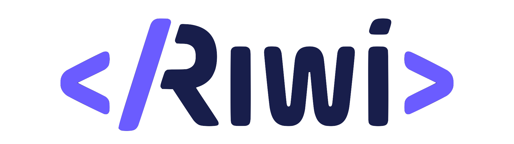

La historia de Git

Git fue creado en 2005 por Linus Torvalds como una solución al control de versiones para el desarrollo del kernel de Linux. Su enfoque descentralizado, rápido y seguro revolucionó el desarrollo de software.

Git fue creado en 2005 por Linus Torvalds como una solución al control de versiones para el desarrollo del kernel de Linux. Su enfoque descentralizado, rápido y seguro revolucionó el desarrollo de software.
Asesoría profesional para tu negocio.
Webs modernas y funcionales.
Impulsa tu negocio en línea.

Escucha una breve introducción sobre Git:

Git es un sistema de control de versiones distribuido para manejar proyectos.
GitHub permite alojar proyectos Git en la nube y colaborar con otros desarrolladores.
Escucha esta breve introducción sobre la historia de Git.
| Servicio | Precio | Duración |
|---|---|---|
| Consultoría | $200.000 | 2 horas |
| Desarrollo Web | $1.200.000 | 15 días |
| Marketing Digital | $800.000 | 30 días |
“Talk is cheap. Show me the code.”
- Linus Torvalds